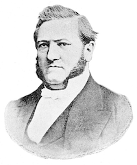
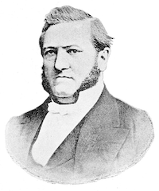

Friedrich Fabri,
Friedrich Fabri

Theologe, Publizist und von 1857-1884 leitender Inspektor der Rheinischen Mission in Barmen veröffentlichte 1879 seine kolonialagitatorische Schrift „Bedarf Deutschland der Kolonien?“, die verschiedene Argumente für eine koloniale Expansion Deutschlands ins Feld führt, z.B. Zugang zu Rohstoffen, Absatzmärkte für den eigenen Handel und Siedlungskolonien für die wachsende Bevölkerung. Sein Interesse an deutscher Kolonialexpansion war nicht ohne Eigennutz, denn die rheinische Missionsgesellschaft bat schon seit Jahren um politischen Schutz für ihre Stationen in Südwestafrika und das dort tätige missionseigene Handelsunternehmen. Die Rheinische Mission war im südlichen Afrika bereits seit 1828 tätig. Dort kam es in den 1870-er Jahren vermehrt zu Konflikten mit den Nama und Herero (vgl. Bade 1984, S.103-132; Engel in Bade 1984, S.142; Speitkamp 2014, S.18).